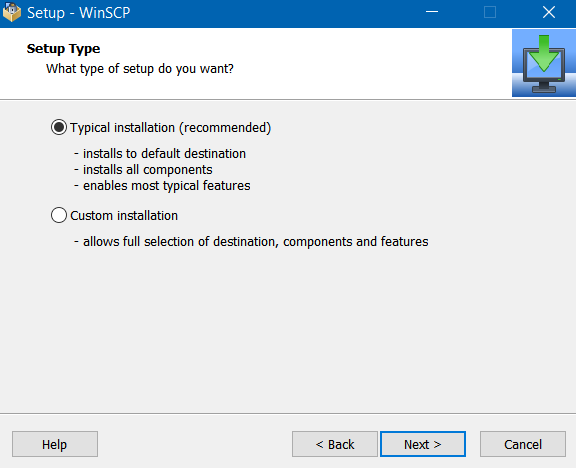
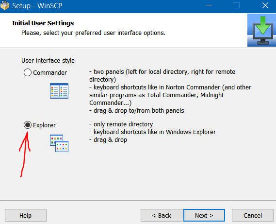
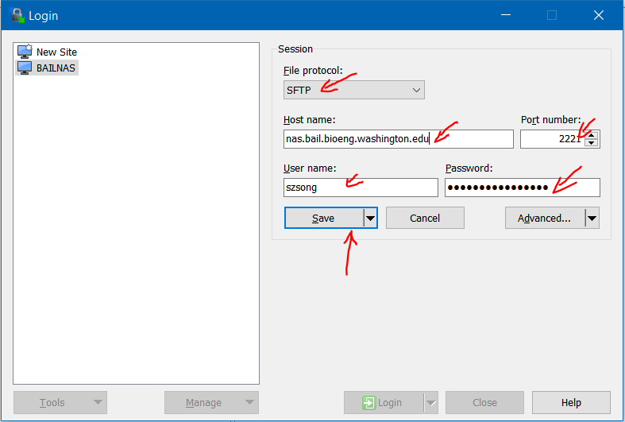
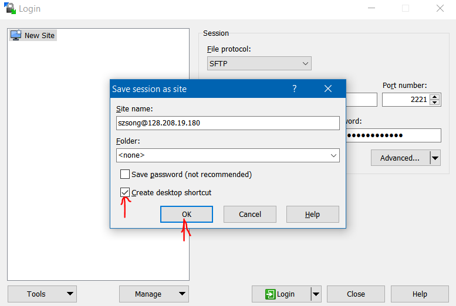
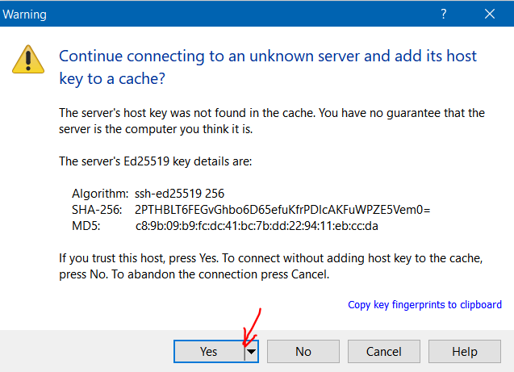
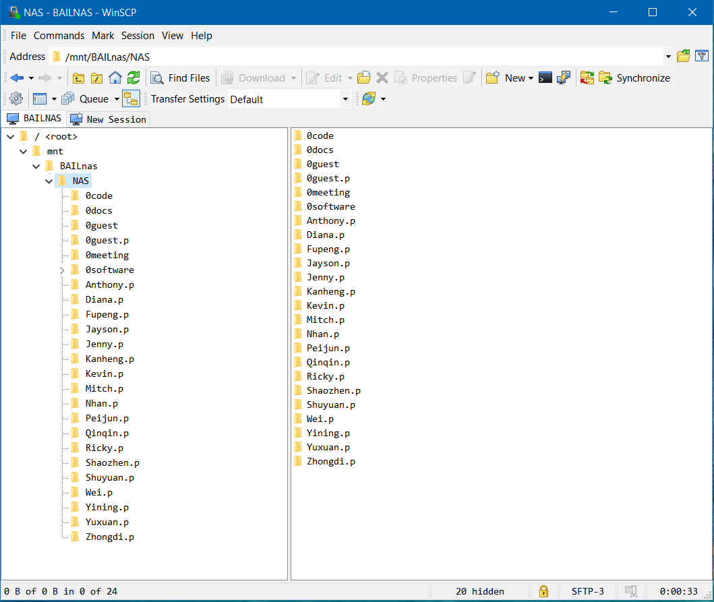

Access instructions
Access within UW network
Mounting the NAS as a network drive is the recommended method to access BAILnas. Please follow the instructions below to mount BAILnas as network drive:
Windows
-
Press Win+R and type
cmd, then Enter -
In command prompt, type
net use n: \\nas.bail.bioeng.washington.edu\NAS, then Enter -
Input your username and password when prompted. Note that your password may not show while you are typing.
Shortcut for windows
-
Alternatively, if you prefer not to use windows commands, please download and run the shortcut executables below:
Click to Download connect-NAS+Data.bat
note: if this executable is blocked by Windows Defender/SmartScreen, just click "more info" and then click "Run anyway".
Mac OS
- From Mac OS Finder, press ⌘+K to bring up the ‘Connect to Server’ window.
- Enter the path to the network drive:
smb:\\nas.bail.bioeng.washington.edu\NAS. - Enter your username and password, then click "OK".
- The NAS drive will appear as "NAS" on your desktop and Finder.
Access from anywhere else
Below is the instructions for using a software "WinSCP" to access NAS with SFTP protocol.
-
Click here to download WinSCP.
-
Install WinSCP with "typical installation" option.

-
Select "Explorer" interface style

-
Enter you logon details as below, then click "save"

-
You can save a shortcut to desktop in the next window

-
Click "yes" to accept server key

-
Now you have access to NAS folder. To navigate to other folders (e.g. BAILnas/Data), you may need to click on upper level directory in order to refresh.
